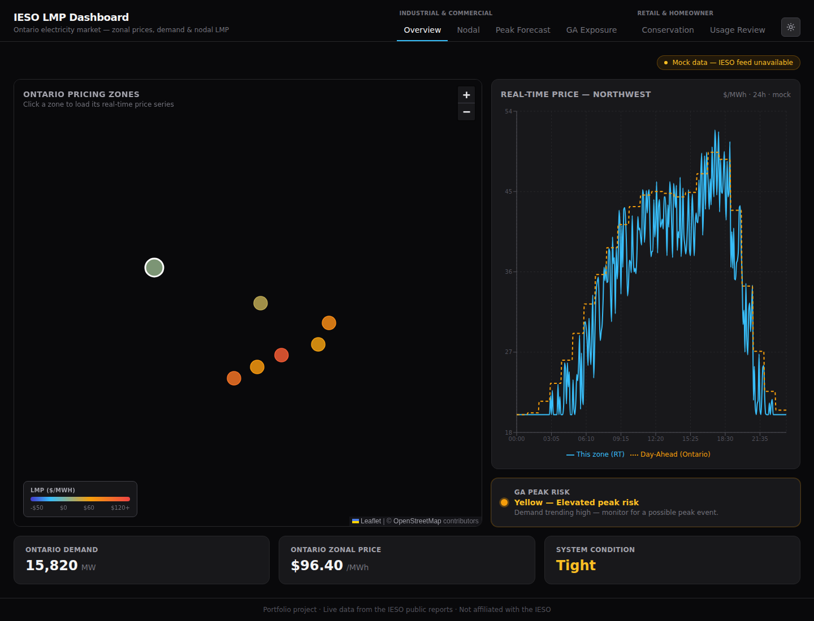
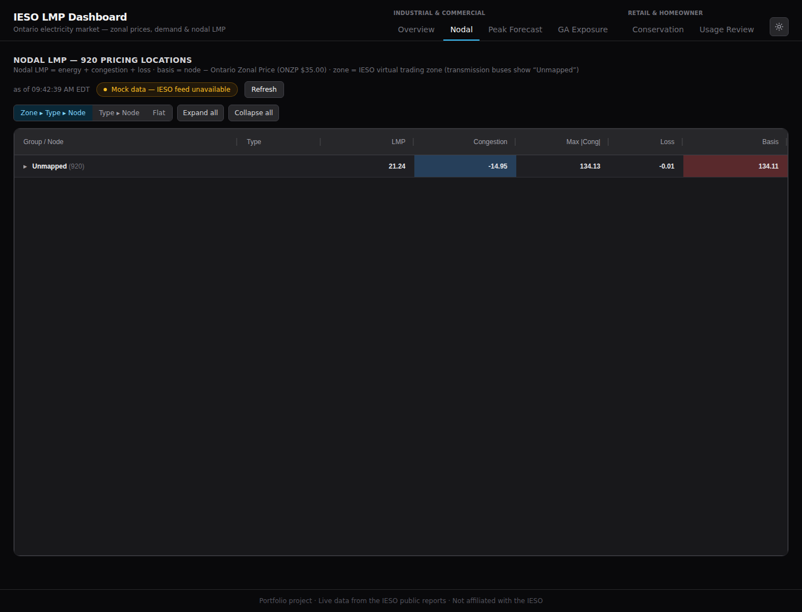
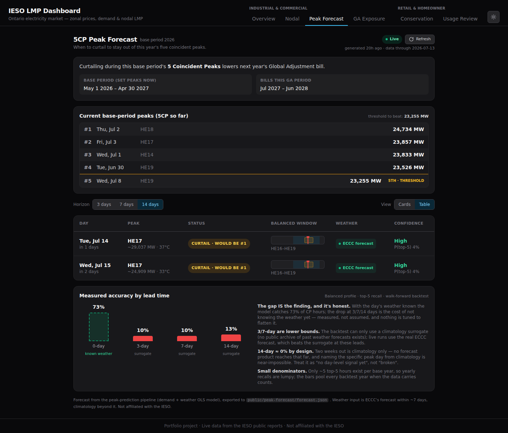
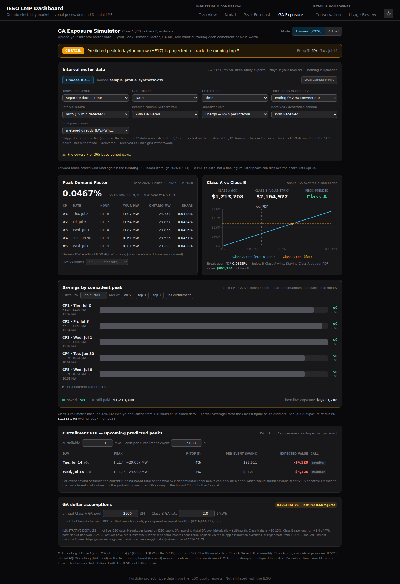
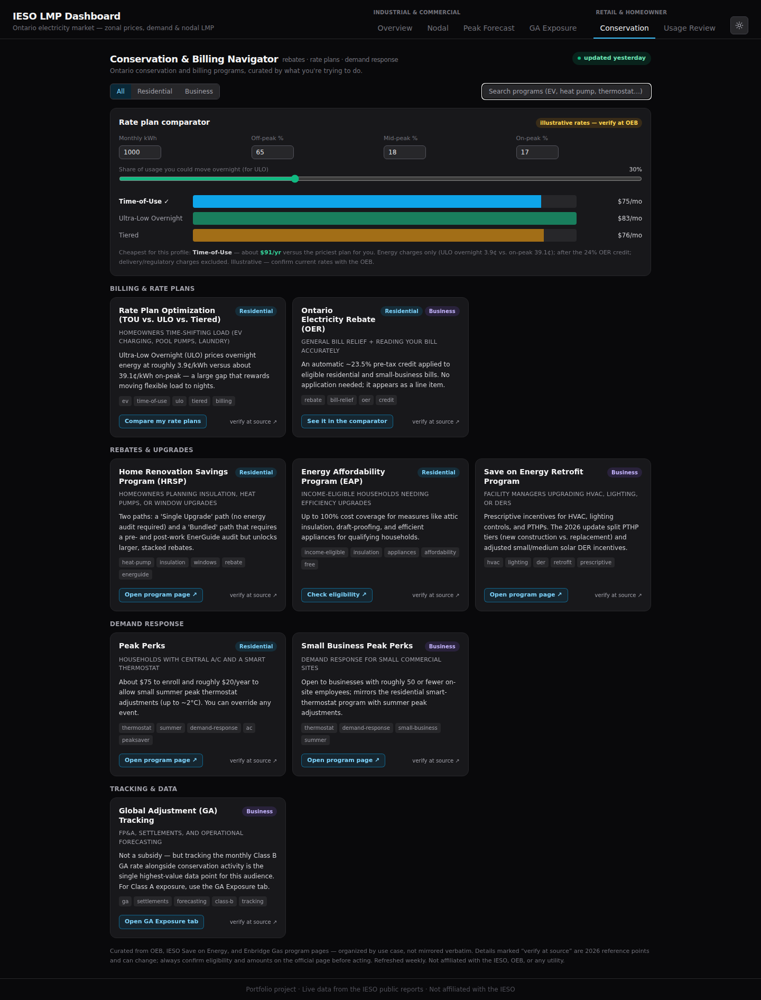
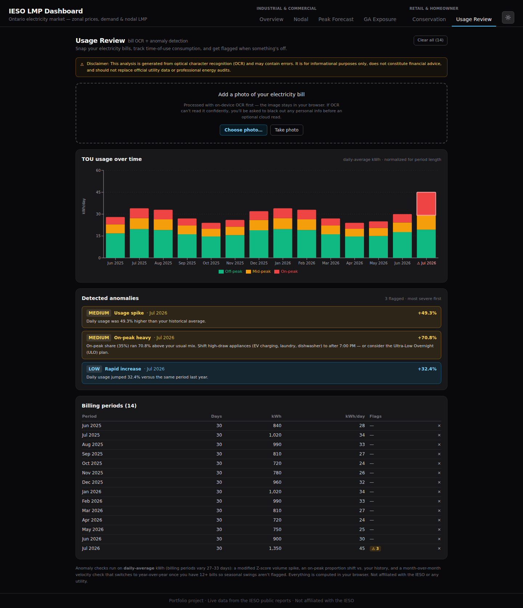

An Ontario electricity-market observability platform — real-time prices,
5CP peak forecasting, Global Adjustment exposure, and private bill analysis, in one place.
Industrial & CommercialRetail & Homeowner● Live IESO dataPrivacy-first
Version 1.0 · Six tabs, two audience sections · Not affiliated with the IESO
Contents
Getting startedNavigation, theme, live vs mock
Overview — the live market at a glanceI&C
Nodal — where the price comes fromI&C
Peak Forecast — when to curtailI&C
GA Exposure — what it costs youI&C
Conservation — programs & rate plansRetail
Usage Review — read your billRetail
Privacy & your dataReference
Troubleshooting & FAQReference
1 · Getting started
EnergyDashboard is a web app — nothing to install. Open it in any modern
browser on desktop or phone.
The two sections
The header groups six tabs into two audiences. Pick the row that matches you:
Industrial & Commercial
Overview · Nodal · Peak Forecast · GA Exposure.
For Class A (ICI) participants, energy managers, and market operators.
Retail & Homeowner
Conservation · Usage Review.
For households, renters, and small-business / building managers.
Switching tabs keeps your work
Anything you enter — an uploaded meter file, bill photos, comparator inputs — stays put
when you move between tabs and come back. Nothing is lost until you reload the page.
Light / dark theme
Use the sun / moon button at the top-right to switch themes. Dark is the default; your
choice is remembered on this device.
Live vs mock data
The Overview and Nodal tabs read live IESO market reports. A coloured pill tells you which
feed you're seeing:
Badge
Meaning
● Live (green)
Data is coming straight from the IESO public reports.
● Mock (amber)
The live feed was unreachable, so realistic sample data is shown so the UI still works. Try again shortly.
Tip. Real-time market reports update roughly every
five minutes. The app re-fetches on that cadence automatically — no need to refresh the page.
2 · Overview Industrial & Commercial
The "what's happening right now" glance — the whole Ontario market made legible in five seconds.

The Overview tab: zone map, 24h price curve, GA peak-risk, and the demand / price / condition bar.
What you're looking at
Ontario pricing-zone map — the 7 plotted zones, each dot coloured by its Ontario Zonal Price on a blue → amber → red scale.
Real-time vs Day-Ahead chart — a rolling ~24h of the selected zone's real-time price against the Ontario day-ahead price.
GA Peak Risk — a green/yellow/red indicator of how likely the current hours are to become a coincident peak.
Stat bar — Ontario demand (MW), the headline zonal price, and the system condition (Normal / Tight).
How to use it
Click any zone dot on the map to load that zone's real-time price series in the chart.
Watch the GA Peak Risk tile — when it turns yellow or red, jump to Peak Forecast for the detail.
3 · Nodal Industrial & Commercial
The depth view — every pricing node on the grid, decomposed into its parts.

The Nodal grid: 900+ pricing locations pivoted Zone → Type → Node.
What you're looking at
Since Market Renewal (May 2025), Ontario prices energy at hundreds of individual nodes. Each
node's Locational Marginal Price breaks down as LMP = energy + congestion + loss, and its
basis is how far it sits from the province-wide Ontario Zonal Price
(basis = LMP − OZP).
How to use it
Use the grouping buttons (Zone ▸ Type ▸ Node, Type ▸ Node, or Flat) to pivot the table.
Expand all / Collapse all to open or close every group at once.
Read the Congestion and Basis columns to see where on the grid the price pressure is.
Note. Nodes the map can't place in a virtual zone appear
under "Unmapped" — coverage of the published node-to-zone map is roughly 93%.
4 · Peak Forecast Industrial & Commercial
The flagship signal — which upcoming hours are likely to become one of this base period's
five coincident peaks, and whether they're worth curtailing.

Running top-5 board, upcoming predicted peaks with curtail/monitor calls, and the measured-accuracy panel.
Why 5CP matters
ICI consumers are billed next year's Peak Demand Factor based on their demand during this
base period's five Coincident Peaks (5CP). Curtailing through those five hours is the single biggest
lever on a Class A Global Adjustment bill — so the whole game is knowing which upcoming hours will
land in the top five.
Reading the tab
Current base-period peaks — the running top-5 board banked so far, with the threshold to beat.
Upcoming predicted peaks — up to five candidate days, each tagged CURTAIL (would crack the top-5) or MONITOR, with a calibrated P(top-5) probability and a suggested curtailment window.
Horizon filter — 3 / 7 / 14 days; the shorter views are nested subsets of the longer one. Toggle Cards / Table for the layout you prefer.
Measured accuracy by lead — honest, backtested recall at each lead time.
Read this honestly. 14-day accuracy sits near zero by design:
two weeks out there is no real weather forecast, only climatology, so the model can't name the exact peak day.
The panel shows the known-weather ceiling next to it so you always see the real ceiling, not a flattering number.
Live vs Sample. A green Live pill means real
pipeline output. An amber Sample data pill means the shipped example is showing (before the first
real run of your deployment).
5 · GA Exposure Industrial & Commercial
The money tab — turn your own interval meter data into dollars: your Peak Demand Factor,
Class A vs Class B exposure, and what curtailing each peak is worth.

Peak Demand Factor, Class A vs Class B with break-even, per-peak savings, and curtailment ROI.
Your data never leaves your browser. The meter file
you upload is parsed and analysed entirely on your device. Nothing is uploaded, stored, or logged. See §8.
How to use it
Click Choose file… and select your interval meter export (MV-90, Itron, or a utility CSV). No file handy? Click Load sample profile to explore with realistic data.
Confirm the column mapping (date, time, reading column, interval length, units). The tab auto-detects most exports and tells you what it inferred.
Read your results:
Peak Demand Factor — your MW share across the five coincident peaks.
Class A vs Class B — annual GA dollars each way, with the break-even PDF that flips which class wins.
Savings by coincident peak — set a curtailment target and see the banked saving per CP.
Curtailment ROI — expected value of curtailing each upcoming predicted peak, using its P(top-5).
Switch Forward (this base period) vs Actual to score against the live running board or a finished period's official peaks.
A negative ROI is a real answer. When the probability-weighted
saving doesn't beat the cost of a curtailment event, the ROI shows negative and the call is monitor — an
honest "don't bother" rather than a nudge to act.
GA pool and rate assumptions are illustrative and adjustable in the
"GA dollar assumptions" panel; the settlement math follows the published ICI rules. Not billing advice.
6 · Conservation Retail & Homeowner
Ontario's conservation and billing programs, organised by what you're trying to do — plus a
rate-plan comparator that tells you which plan is cheapest for how you actually use power.

Rate-plan comparator on top; the program catalog grouped by use case below.
Finding a program
Filter by audience — All, Residential, or Business.
Search by keyword (e.g. heat pump, thermostat, EV) to narrow the catalog.
Each card shows the key detail, tags, and a link to the official program page. Details marked verify at source are 2026 reference points — always confirm eligibility and amounts on the official page before acting.
Comparing rate plans
Enter your monthly kWh and how it splits across off / mid / on-peak.
Drag the overnight-shift slider to model how much load you could move to overnight (this is what makes Ultra-Low Overnight pay off).
The bars show each plan's monthly cost after the Ontario Electricity Rebate; the cheapest is marked ✓, with the annual gap versus the priciest plan.
Illustrative rates. The plan structure (TOU / ULO / Tiered windows)
is correct; the cents-per-kWh are reference points badged illustrative until a live OEB feed is wired.
Confirm current prices with the OEB.
7 · Usage Review Retail & Homeowner
Snap a photo of your electricity bill and get it read, charted, and checked for anomalies —
entirely in your browser.

Time-of-use usage over time, detected anomalies explained in plain language, and the billing-period table.
Your bill stays on your device. Reading happens with
on-device OCR — the image never leaves your browser. Only if OCR can't read a bill confidently are you offered
an optional cloud read, and only after you black out any personal details yourself. See §8.
How to use it
Click Choose photo… or Take photo (on a phone). No bill handy? Click Load sample bills to see it work.
The app reads the meter ID, billing dates, and off/mid/on-peak kWh, then asks you to confirm or correct them.
Add more bills over time — they group by meter and build a timeline.
What it flags
Anomaly
What it means
Usage spike
Your daily usage this period is well above your own historical average.
On-peak heavy
You're using more of your power during expensive on-peak hours than usual — with a tip to shift load after 7 PM or consider ULO.
Rapid increase
A sharp month-over-month jump — or, once you have a year of bills, a year-over-year jump so seasonal swings don't false-trigger.
Analysis is generated from OCR and may contain errors. It's informational
only, not financial advice, and doesn't replace official utility data.
8 · Privacy & your data
The two most sensitive things you can bring — your interval meter data and a photo of your
bill — never leave your browser by default. This is built into how the app works, not just promised.
GA Exposure
Your meter CSV is parsed and analysed entirely on your device with
pure client-side code. There is no upload, no storage, and no analytics tracking of your data.
Usage Review
Bills are read with on-device OCR. The image stays in your browser
and is held only in memory for the current session.
The one optional exception — and how it's contained
If on-device OCR can't read a bill confidently, you may choose a cloud-assisted read. Before anything
is sent, you black out personal details on a redaction canvas. The server route that performs the read is
ephemeral by design: it parses the image in memory, returns the extracted numbers, and terminates. It
writes nothing to any database, file, or log, and it never records anything derived from your image or personal
information. This path is entirely optional — the on-device reader works without it.
In short. No accounts. No server-side store of your energy
data. No third-party analytics on what you upload. Reload the page and your session data is simply gone.
9 · Troubleshooting & FAQ
Question
Answer
The badge says "Mock data."
The live IESO feed was briefly unreachable; the app shows realistic
sample data so it still works. It re-tries automatically — check back in a few minutes.
My meter file didn't map correctly.
Use the column-mapping dropdowns in the GA Exposure tab to
point at the right date, time, reading, and unit columns. The panel tells you what it inferred and how many rows it read.
OCR misread my bill.
Confirm-and-correct the fields before saving — you're always shown the extracted
values first. For a tough photo, use the optional redact-then-cloud-read fallback.
Are the rate figures current?
The plan structure is correct; the cents-per-kWh are illustrative
reference points (badged as such). Confirm live prices with the OEB.
Why is 14-day forecast accuracy so low?
By design — there's no real weather forecast two weeks out,
only climatology. The app shows this honestly rather than inflating the number.
Does this bill me or connect to my utility account?
No. It's an observability tool. It reads public
market data and whatever you choose to bring; it is not connected to any billing system.
EnergyDashboard User Manual v1.0 · Ontario electricity-market observability · Portfolio project, not affiliated
with the IESO, OEB, or any utility · All market data is public. Figures shown are illustrative unless a live feed is indicated.